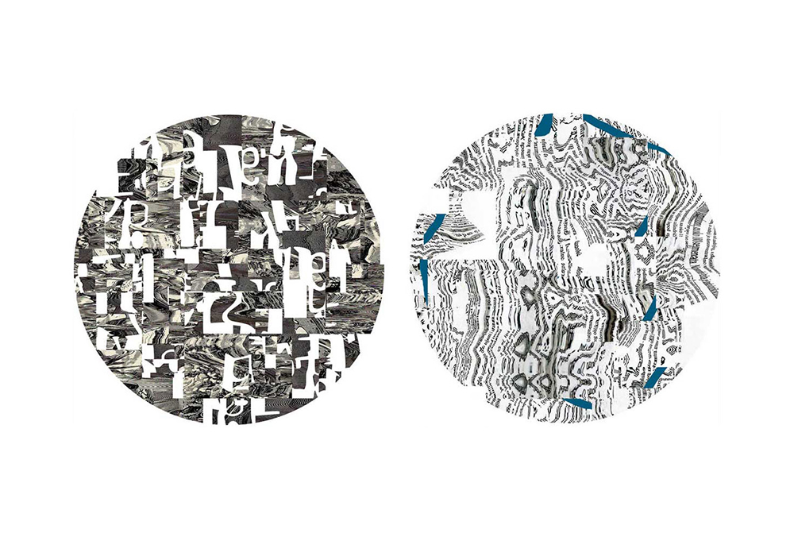
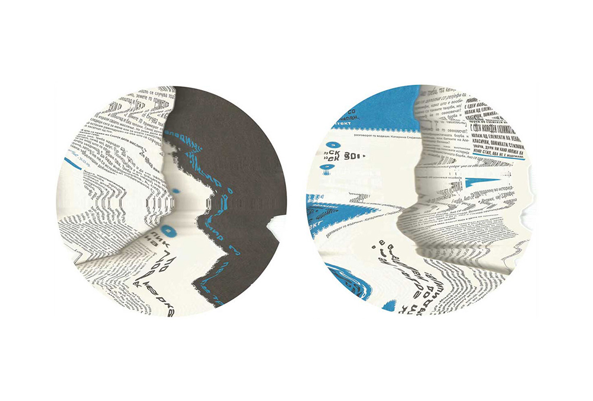
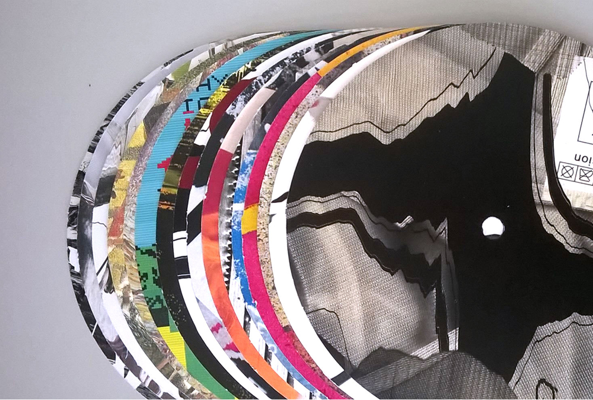
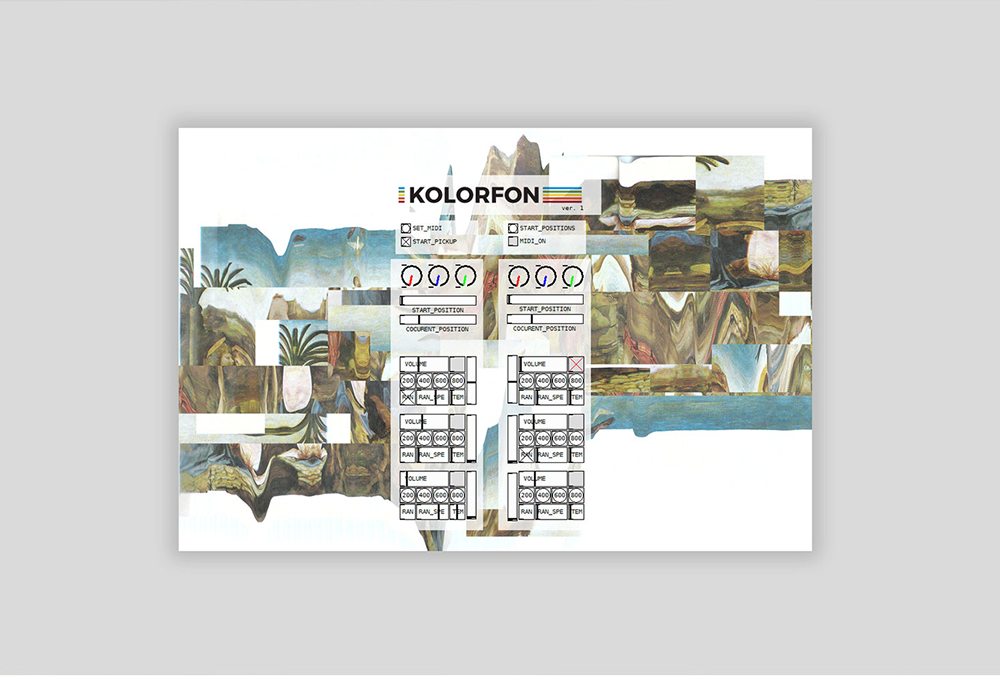

Kolorfon
I created the Kolorfon, a gramophone that converts colors into sound. The process involves reading the colors from three photocells using color sensors, digitizing the resulting signals with an Arduino board, and then sending them to a laptop. I wrote a program in Pure Data that converts the signals from the Arduino into MIDI signals, which are sent to Ableton Live to generate the sounds. For the installation, I made two Colorphones: one for rhythm and the other for melody. Visitors were able to create their own "records" and then listen to the resulting sounds — making unique musical compositions in a fun and interactive way.



